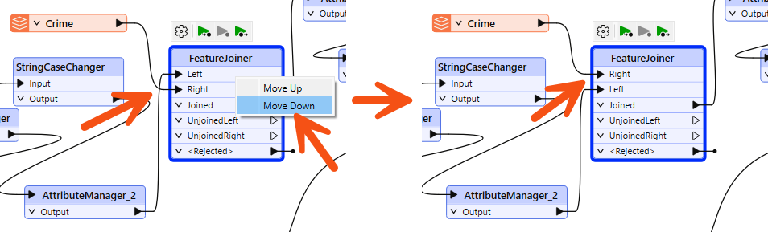
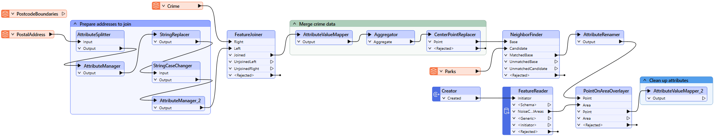
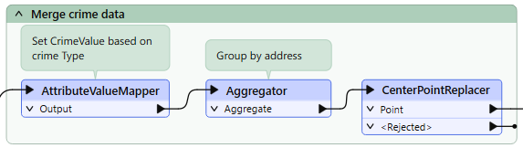
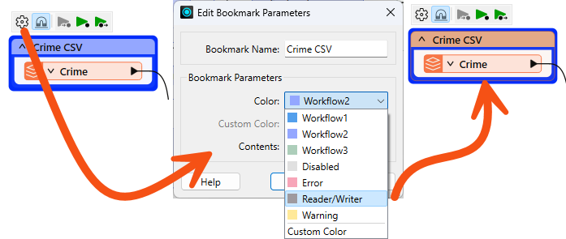
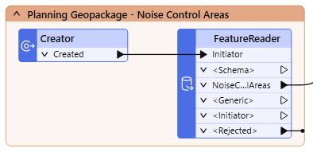
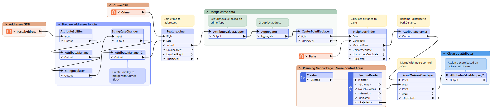

Learning Objectives
After completing this lesson, you’ll be able to:
- Rearrange transformers into a logical layout that groups those carrying out a single task.
- Use annotations to clarify the processes taking place in a workspace.
- Use bookmarks to turn a single workspace into defined sections.
- Avoid poor design choices like overlapping connections.
Resources
- Starting workspace
- C:\FMEData\Workspaces\UseDataIntegrationBestPractices\exercise-improving-workspace-style.fmw
- Complete workspace (example)
- C:\FMEData\Workspaces\UseDataIntegrationBestPractices\exercise-improving-workspace-style-complete.fmw
Unit Content
You have been assigned to a project to calculate the "walkability" of each address in the city of Vancouver.
Your colleague wasn't aware of FME style best practices when they gave us the workspace, which made working with it challenging. We need to present our workspace, so we want it to look neat, organized and well-documented.
1) Start Workbench
Start FME Workbench (2024.0 or later) and open the starting workspace (C:\FMEData\Workspaces\UseDataIntegrationBestPractices\exercise-improving-workspace-style.fmw).
2) Examine Workspace
The workspace is unorganized. Let’s examine it in sections to figure out how it works.

- PostalAddress and PostcodeBoundaries read from Addresses.gdb.
- Transformers clean up attributes from the PostalAddress feature type to create a separate Number and Street attribute. The last two digits of the Number are replaced by XX to create an attribute that will be the Join Key for joining the crime data.
- Crime reads from Crime.csv. This dataset stores the street number for each crime incident with XX as the last two digits to protect anonymity.
- The FeatureJoiner joins PostalAddress and the Crime data based on the Join Key attribute from section two and the Block attribute from Crime.
- These transformers give the crime Type attribute a number based on severity and then calculate the total CrimeValue for each address block. Then, the CenterPointReplacer extracts only one point if multiple crime incidents occur in the same location.
- The workspace reads the Parks MapInfo TAB file. It will use this data to measure the walking distance from addresses to parks.
- The NeighborFinder determines the park closest to each address.
- The AttributeRenamer renames the _distance attribute from the NeighborFinder to ParkDistance.
- The Creator and the FeatureReader read a Planning Restrictions OGC Geopackage, including noise restriction areas from the NoiseControlAreas layer.
- The PointOnAreaOverlayer joins the point data containing the crime, distance to park, and addresses with the NoiseControlAreas polygons. This joined data assigns the noise restrictions to any overlapping points. The AttributeValueMapper assigns the zone a score, creating the attribute NoiseZoneScore. This new attribute will reflect that addresses in noise-restricted areas are more walkable.
Firstly, let's clean up the transformers. Move the transformers around so that there are no overlapping connections.
For the FeatureJoiner, you could move the Crime reader below the Prepare Addresses to Join bookmark or reorder the FeatureJoiner ports. Right-click on the Left input port, and select Move Down. Now, the two connection lines are not crossing:


Changing port order can help tidy your workspace, but beware that you might need to use annotation to highlight the different order for FME users who expect ports to be in a particular location.
Move the transformers into a logical order and add a bookmark around groups of related transformers:

4) Remove Unused Feature Types
Unused feature types can clutter your workspace. If you aren't planning to use them later, you should remove them.
Find the PostcodeBoundaries reader feature type and delete it:

5) Add Style
Having rearranged the transformers and bookmarks, we can now add annotations to highlight what is happening. This step will require inspecting the transformers to determine what they are doing and inspecting the readers to determine which format they are in.
Add annotation to relevant transformers:

Adding good annotation where necessary will help determine what is happening in the workspace.
Add bookmarks around the reader feature types and set the color to the preset Reader/Writer color:

Now, you can find your reader feature types at a glance.
You can also do this with FeatureReaders and FeatureWriters:

Your final workspace should look something like this:

6) Run Workspace
If you wish, collapse all the bookmarks and use Rerun Entire Workspace to ensure fresh caches.
7) Save the Workspace
You can choose to save this workspace as a regular workspace or as a template workspace.